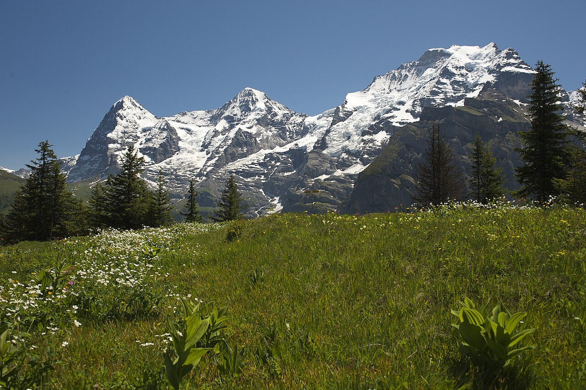
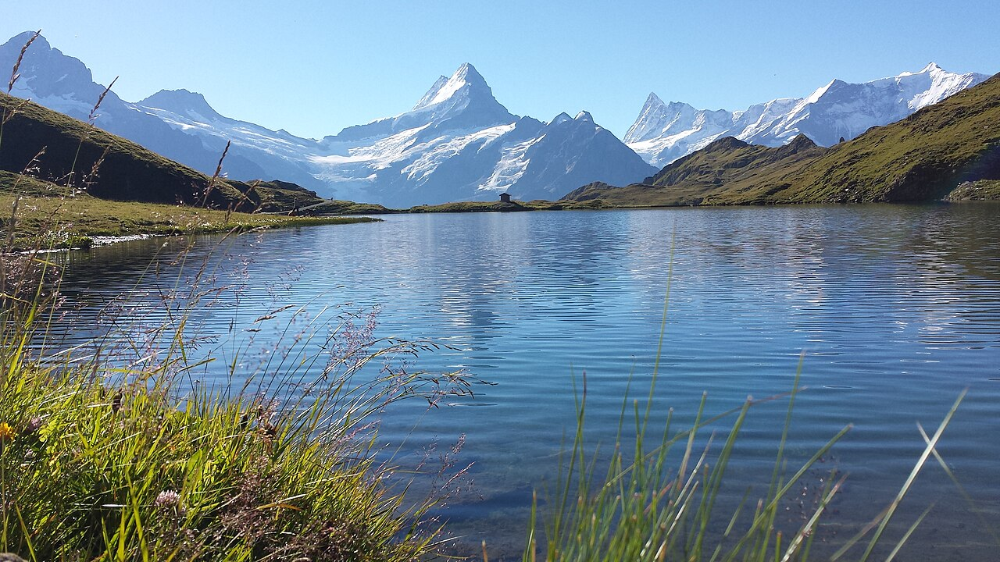
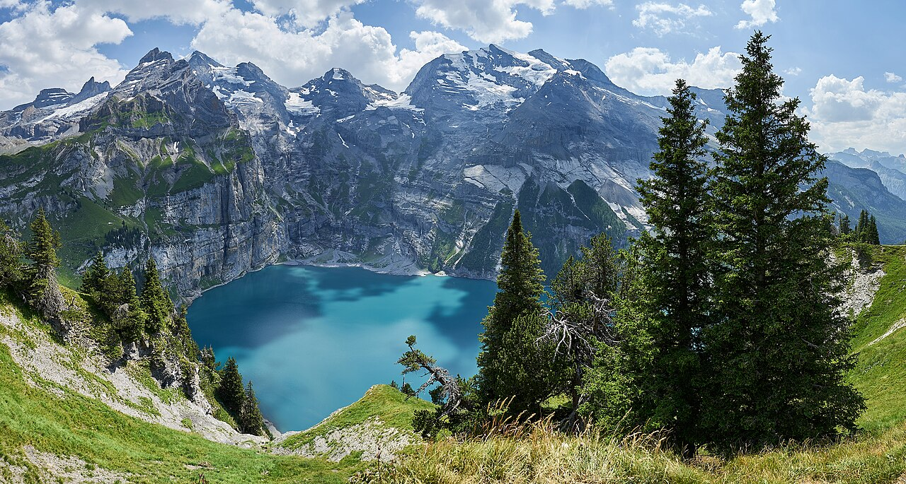
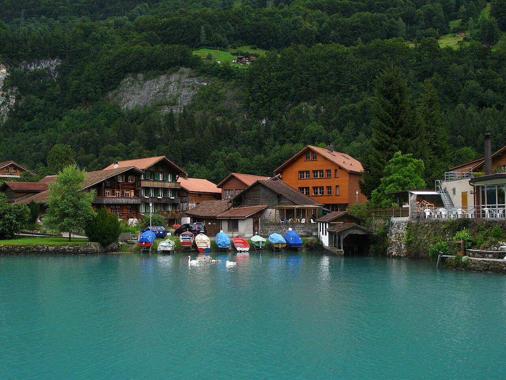
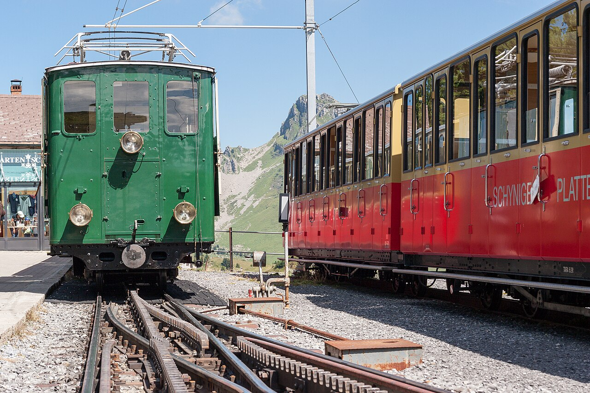

May
OKWaterfalls at their biggest and cheap, but snow above 1,800 m and some lifts shut.
per person≈ €1 480–2 390

Cliffs, waterfalls and the Eiger, Mönch and Jungfrau outside your window. The classic Swiss Alps, done from one cosy base.
All lifts open from mid-June. Late May has the biggest waterfalls, but trails above 1,800 m are still snowy.
July–August adds ≈ €160–260 per person here (+11 %), mostly for beds. Passes, food and most lift tickets cost the same all summer.
Waterfalls at their biggest and cheap, but snow above 1,800 m and some lifts shut.
Lifts open from mid-June, still before the school holidays. The sweet spot.
Every trail open and flowers at their best, but the busiest and priciest month.
Warm and fully open. Crowds ease a little after mid-August.
Keep 1–2 days flexible and save the big mountain days for clear weather.
Langenfeld → Köln → Basel → Interlaken → Lauterbrunnen. Check in and stroll to Staubbach Falls at golden hour.
Cable car to Grütschalp, then the flat panorama path to car-free Mürren (≈ 1.5 h) with the Eiger, Mönch and Jungfrau ahead. Walk down to the hamlet of Gimmelwald and take the cable car to Stechelberg.
Morning at Trümmelbach Falls, 10 glacier waterfalls inside the mountain (≈ CHF 16). Afternoon in the quiet Sefinental valley from Stechelberg, a hidden gem most people skip.
Train to Grindelwald, gondola to First. First Cliff Walk, then hike to the Bachalpsee mirror lake (≈ 1 h each way) for the Schreckhorn reflected in still water.
Cable car from Wengen to Männlichen, then the easy Panorama Trail to Kleine Scheidegg (≈ 1.5 h) under the Eiger. Train down through Wengen.
Turquoise Lake Brienz: bus to Iseltwald (the pier costs CHF 5), boat to Giessbach Falls and the old funicular, then Brienz village. Harder Kulm above Interlaken at sunset.
Train to Kandersteg, gondola (CHF 36–40 return) and a 20-minute walk to Oeschinensee, the most beautiful lake in the Alps. Fit hikers take the higher Heuberg panorama trail. On the way back, stop at the tiny Blausee (CHF 11–13).
From mid-June: vintage cog railway to Schynige Platte (alpine garden, panorama loop ≈ 2.5 h). Rainy-day plan: Thun old town and castle, Oberhofen castle by boat, or the St. Beatus caves.
Late breakfast, then the train back to Langenfeld (≈ 7 h).





With 5 people, a holiday apartment with a kitchen is almost always cheapest. Book with free cancellation now and re-check prices later.
Right in Lauterbrunnen, with self-catering kitchens. Camping Jungfrau also rents simple huts and dorm rooms.
≈ CHF 45–60 pp/nightLauterbrunnen, Wengen or Wilderswil via Booking, Airbnb, e-domizil or Interhome. Wilderswil and Matten (by Interlaken) are 20–30 % cheaper.
≈ CHF 300–450 per night for the groupA historic mountain hotel high above the clouds: sunrise over the 4,000 m peaks with nobody else there.
≈ CHF 120–250 pp with dinnerLangenfeld → Köln Hbf (S6, 20 min) → ICE to Basel SBB (≈ 4 h) → IC to Interlaken Ost (≈ 2 h) → Bernese Oberland Railway (BOB) to Lauterbrunnen (20 min). Book one through-ticket Köln → Lauterbrunnen with DB 'Sparpreis Europa', usually €40–80 each way if booked when sales open.
Berner Oberland Pass, 6 days: CHF 350, or CHF 254 if you are under 25 or hold a Half Fare Card. It covers trains, buses and lake boats, plus 25+ mountain lifts (Schynige Platte, Männlichen and more), with big discounts on others (e.g. First at 50 %). If the Jungfraujoch is a must, take the Jungfrau Travel Pass + Jungfraujoch add-on (CHF 89) instead. That is the cheapest way to the top.
CHF per person for the whole trip in May–June, sharing everything between 5. 'Budget' = hostels/campsites and cooking. 'Comfort' = apartments/3★ hotels and more meals out.
| Item | Budget | Comfort |
|---|---|---|
| Train Langenfeld ⇄ Lauterbrunnen | 95 | 150 |
| Swiss trains, buses, boats (pass) | 350 | 350 |
| Mountain lifts & entry fees | 125 | 330 |
| Accommodation (8 nights, shared) | 440 | 720 |
| Food (cook + picnic / some dinners out) | 315 | 585 |
| Buffer (coffee, lockers, souvenirs) | 60 | 100 |
| Total (CHF) | 1 385 | 2 235 |
€ at 1 CHF ≈ €1.07. 2026 prices; Swiss fares rise ≈ 3–4 % from Dec 2026. Splurges are listed separately.
Today is late October 2026. See the overview page for the full timeline.